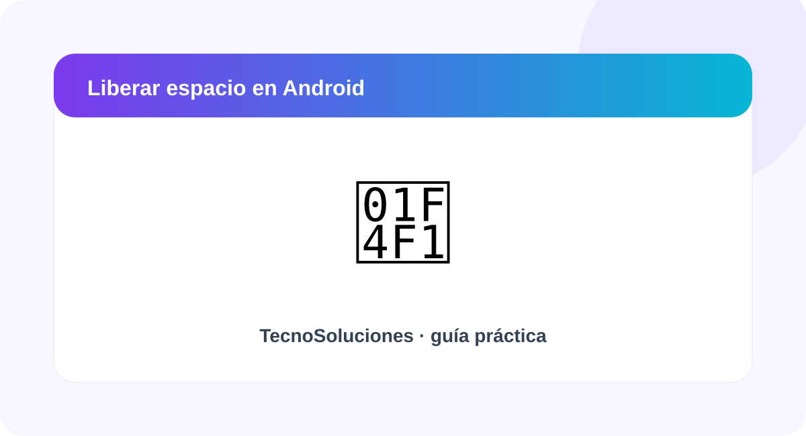

Cómo liberar espacio en Android sin borrar tus fotos

Aprende a revisar qué ocupa el almacenamiento y a liberar espacio usando herramientas del propio teléfono.
Revisa cuánto espacio tienes
Abre Ajustes y busca la sección de almacenamiento. El nombre puede variar según la marca y versión de Android.
Busca archivos grandes
Revisa videos, descargas y archivos que ya no necesitas. En muchos teléfonos puedes ordenar o filtrar los archivos por tamaño.
Limpia la caché cuando sea apropiado
Algunas aplicaciones permiten borrar archivos temporales o caché desde sus opciones de almacenamiento. Evita usar aplicaciones de limpieza de origen desconocido.
Revisa la papelera y las copias
Algunas galerías y gestores de archivos conservan elementos eliminados durante un tiempo. Comprueba esos apartados y verifica que tus fotos importantes tengan una copia.
Resumen
Empieza identificando qué está causando el problema y realiza cambios de uno en uno. Así podrás comprobar qué solución funcionó y reducir el riesgo de eliminar información importante.
Fuentes recomendadas: documentación oficial de Google, Microsoft o WhatsApp según el tema. Consulta también Fuentes y referencias.